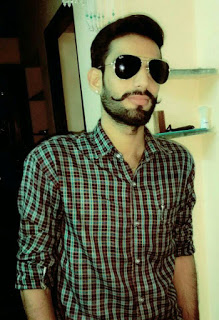
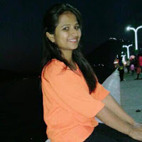
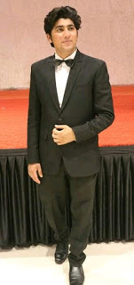
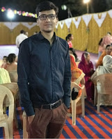

| Home | About School | Alumni | Annual Day | School Activities | About Us |
|---|
| Alumni |
|---|
Mr. Yagyapal Singh ( Batch Year : 2009) after doing his B.Tech is pursuing M.Sc Physics. The Fabindia Family is happy to welcome Mr. Yagyapal Singh back to school as their new Physics Teacher. School wishes him a rewarding time with us!
Interview
(ED: Editor, YS: Yagyapal Singh)
ED: What was your batch year?
YS: My batch Year was 2009
ED: Who were your favourite teachers?
YS: My favourite teachers were C. P. Sir and Bharti Ma'am
ED: Who were your batch mates?
YS: My batch mates were Darshan Vaishnav, Vinay Rawal, Ravindrapal Singh, Parikshit Vyas.
ED: Did you participate in any tournaments or activities?
YS: I have participated in 3 State and 3 District Cricket Matches.
ED: What is your present qualification?
YS: I have done my B.Tech (civil) and pursuing M.Sc Physics.
ED: What are the memories of your school?
YS: School helped me in my foundation, I still remember those days when I was in school.
ED: How do you feel joining the school back?
YS: I am feeling great joining the school back..
ED: Will you like to give any message to your juniors, school, or friends etc.?
YS: Yes, I would urge juniors to focus on their studies as well as other activities and not to take studies lightly, work hard and achieve success.
Interview
(ED: Editor, NR: Nikita Rajpurohit)
ED: Which was your batch year?
NR: My batch year was 2009-10.
ED: Who was your favourite teacher?
NR: My favourite teacher was Mr.Rahul Tak.
ED: Who were your batch mates?
NR: My batch mates were Daksha, Rahul Rawal, Rahul Bhandari, Gajendra, Rajvendra.
ED: Did you participate in any activities?
NR: Yes I have participated in many activities such as Rangoli Making, Extempore, Sports, etc.
ED: What are your qualification?
NR: I have completed master degree in English.
ED: Tell us about your memories of the school?
NR: It's rightly said that, "School days are the beats of one’s life". For me too it was a golden phase of my life. The experience of school days is unforgettable and it'll be cherished throughout my life. I have got lot of love and support from teachers and it made my five years memorable for me. At last I would say that I’m proud to be a Fabindian.
ED: What message would you like to say to our students?
NR: I would like to say that never stop the struggle, as struggling is the essential part of our life, the one who faces hard times in life is the all rounder in its own terms,so always have a positive outlook and never give up.
ED: What are you doing these days?
NR: These days I’m working in a school as an English teacher.
Interview
(ED: Editor, CV: Chirag Vaishnav)
ED: Which was your batch year?
CV: 2012-13
ED: Did you participate in any activities? Mention them.
CV: Yes, I have participated in Talent Competitions (mimicry of actors), drama, Football and handball matches (Inter House).
ED: Which was your favorite spot in the school?
CV: My favorite spot was that tree in the middle of the school ground.
ED: What are you doing these days?
CV: I worked as SME (Subject Matter Expert), a trainer at Intellect Global services, Mumbai (2016 to 2018) and currently have joined the family business in Umbrella Industry, Falna (Raj).
ED: What are your qualifications?
CV: I have done BMS (Bachelor in Management Studies) and have completed MCom. and am pursuing LLB
ED: What have you learned from The Fabindia School?
CV: The things that I have learned are social skills, respect, self-worth, empathy and realizing my own potential. On the sports field, I have learnt about winning and losing graciously because of the teachers who believed in me, I also learnt that I was capable of more than I thought and the most important thing that I obtained is the power of communication.
ED: What are your memories of the School?
CV: There are endless memories of the School. Some best memories like taking unnecessary breaks for washroom and water, hiding behind friends when teachers asked questions, counting the number of people before knowing which paragraph you would be reading, Byju sir scolding every time as we used to play tic tac toe in the last bench and telling “Both of you get out of my class”.
ED: What message would you like to give our students?
CV: These are the best days of your life, enjoy each and every moment because these days are not going to come back, study well and follow your dream. Good luck
Interview
(ED: Editor, AS: Arjun Suthar)
ED: What was your batch year?
AS: 2011-12
ED: Did you participate in any activities? Mention them.
AS: Yes, I participated on Annual day function, debates, etc.
ED: What was your favorite spot in the school?
AS: In the school my favorite spot was my classroom.
ED: What are you doing these days?
AS: These days I am pursuing my C.A. intern. As well as a part-time business (Marketing and Selling)
ED: What are your qualifications?
AS: I completed my B.Com and my post graduation C.A. intern. is awaited.
ED: What have you learnt from The Fabindia School?
AS: I have learnt many things from my School like being fluent in English and to be confident.v
ED: What are your memories of the School? AS: In my memories I usually remember the scolding of principal ma’am and the support of her and teachers. ED: What message would you like to give our students? AS: Enjoy the school days, work hard and be confident to reach the success. Interview (ED: Editor, SP: Soharsh Parihar) ED:What was your batch year? SP: 2014-15 ED:Who were your batch mates- SP:Bhagirath Singh, Shinu Philip, Tamanna Chouhan, Shobha Choudhary, Rahul Singh, Prateek Udawat ED:Did you participate in any activities? Mention them SP: I have participated in drama, dance, science exhibition, commerce exhibition, basketball matches, volleyball matches, ED:What was your favorite spot in the school? SP:The whole school was no less than a heaven for us as it was full of nature, knowledge, fun, etc. But the area behind the admin block was my favourite place. ED:What are you doing these days? SP:I m pursuing my MBA in international business nowadays. ED:What are your qualifications? SP:I have completed my BBA. ED:What have you learned from The Fabindia School? SP:When it comes to learning I can say that The Fabindia School has given me everything that was required to compete the world now i.e. Knowledge, confidence, leadership skills, overall development. ED:What are your memories of the School? SP:As always said school days are the best days of one's life, we have had best teachers who always guided us to the right path and best friends who were always there in good and bad times. ED:What message would you like to give our students? SP:I would like to give a short and sweet note that never give up Fabindians, there is always a ray of sunshine after darkness..always rock the way you do. Developed by :-Rakesh Suthar XIth
Bhadrajun Artisans Trust
The Fabindia School
My Good School
Green School Programme
School`s Facebook Page
Brewing knowledge
©Copyright-2019 The Fabindia School (All Rights Reserved)